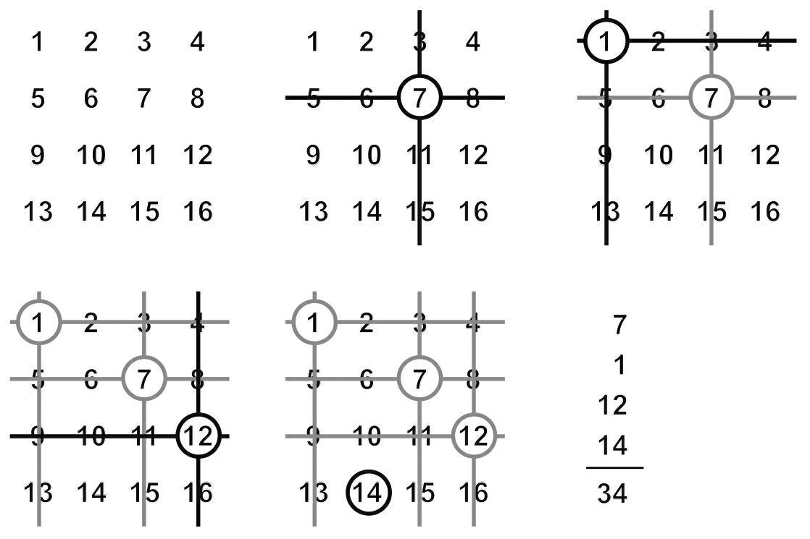
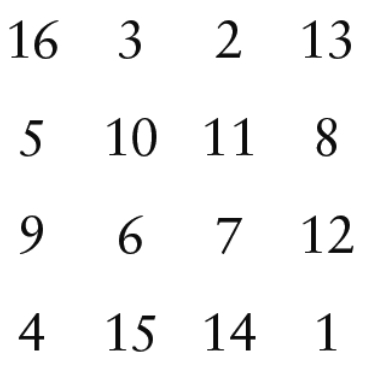

数学带有魔法，而且多彩多样。很多人都可以只凭借数学变成魔术师，因为很多魔术技巧和纸牌戏法本身就是基于数学理论的。美国数学家查尔斯·桑德斯·皮尔士（Charles Sanders Peirce）曾想出过当时最复杂的纸牌戏法。其实，用数学也可以变出一些很简单的魔术。
皮尔士的纸牌戏法基于费马小定理。表演这个戏法需要两摞牌，并且将两摞牌按照一种特定的顺序排序，使两摞牌之间有一种特定的关系。之后，打乱第一摞牌，翻开第二摞牌，这时会发现，两摞牌中特定的关系还存在着。这个纸牌戏法太过复杂，导致皮尔士整整写了13张纸，才将它的进行过程解释清楚，而揭示纸牌戏法内在的原理他也写了整整52张纸。尽管他的作品非常艰涩复杂，但还是给他带来了极高的知名度。
今天我给大家介绍一种专为懒惰的魔术师设计的戏法，这个戏法既简单又有着很好的表演效果。
戏法过程：将1—16共16个数连续不断地写入4×4的方格中。第一行写入1、2、3、4，以此类推第四行写入13、14、15、16。
观众可以随机选择一个数，现在根据他选的数删去该数所在的行和列。接着观众在剩下来的数中选择一个数，把这一次选择出来的数所在的行和列也全部删去。不断重复这个过程，直到观众一共挑选出来四个数为止。观众将他挑选出来的四个数相加，报出答案后，发现正好跟魔术师提前使用“读心术”写在字条上装在信封里的数相同。
下图的示例中展示了一位观众选择的情况，他选择了7、1、12、14，数值总和为34。

大家可以揭开这个戏法唬人的面纱吗？背后的数学原理是如何起作用的呢？
我的提示：此戏法与数字幻方有关。
4×4的幻方与上图相似，只是填入的数不太相同。在幻方中，每一行、每一列以及两条对角线上的4个数之和都是相同的，这个相同的数被称为“幻方数”。因此，如果是在4×4的幻方中，幻方数应为(1+2+3+…+16)/4=(16×17)/(2×4)=34。与幻方同理，我们这种戏法也有着一定的规律。
阿尔布雷特·丢勒（Albrecht Dürers）在他的铜版画《忧郁I》中创造了一个非常著名的幻方，这幅画作完成于500多年前，由于其复杂的象征意义被誉为丢勒最神秘的一幅画作。在《忧郁I》的画面右上角出现的幻方如下图所示：

最后一行中间的15、14连在一起就是这幅作品创作的年份——1514年；而两旁出现的4和1代表着丢勒姓名的首字母在字母表中的位置——第四位的D和第一位的A。
大家还能发现幻方中其他神奇的地方吗？